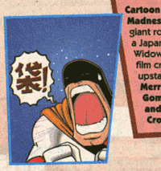

秘密指令「袋」の謎を追え！
秘密指令「袋」の謎を追え！
今日も謎がオレを呼んでいる。
超秘密探偵スカポン（Super Secret Secret Sukapon）の冒険！
パワパフアメコミマニア・スカポン太とは仮の姿。
オレの本当の姿は「超秘密探偵スカポン」。
正式にはSuper Secret Secret Sukapon。
深くかぶった帽子にトレンチコートがオレのトレードマークさ。
いけねえ、チャットにはまってもう朝の5時半だ。まともな人間のやることじゃねえ。
だがいいのさ、不摂生こそがオレのスタイルだ。
とりあえす、紅茶でも飲んで一服でもするか。お気に入りはフォションの「シャングリラ」。オリエンタルな渋みがオレのただれた胃を刺激する。
しかし、有能なエージェントには休息の時間はない。
ほら、また指令がきやがった。
「パワパフDCコミック＃16の『袋』の謎を解決せよ」なんだぁ？
一緒に映像も送られてきた。それがこれだ。
なんだいこりゃ？なんだ「袋」って？
いやそもそも、こいつダレだ！？
オレはこれでも表の顔はパワパフマニアで通っている。もちろんコミックは手元にある。さっそく＃16を手に取る。
この背景やレイアウトから、これは巻末の読者ページ、「suger & spice」と推理した。ビンゴだ。さすがオレ。
「はーい、私パワーパフガールズ大好きです」みたいな読者からのお手紙に混じって、こいつがいた。
ん、こいつどっかで見たことあるぞ。どこでだ？オレは灰色の脳細胞をめまぐるしく回転させた。
そうだ！「スーパーマン競争」でヒーロー会議の議席にいたやつだ！やはりパワパフとの関連があるやつに違いない。 ようし、ビデオを見返して一気に解決だ！
（ ´Д`）y━~~ ・・・・・・・・世の中そう単純でもない。
結論から言おう、パワパフとの関連は半分当たりで半分はずれといったところか。
こいつの名は「宇宙怪人ゴースト」原題Space Ghost。なんせ古い作品だからな、邦題もなかなかイカレいかしてる。もちろん、パワパフとは直接関係ない。これが半分はずれだ。
しかし、こいつはカートゥーンネットワークの前身ハンナ・バーベラの看板作品の一つで、そのためスーパーヒーロー会議にはゲスト出演してたってわけだ。よく見てみると、他にも電子鳥人Uバードもでていたな。まあ、そんなわけでこれが半分当たりだ。
さて、このゴースト、なんと現在でもカートゥーンネットワークでも放映中だ。幸いオレはCSに加入している。さっそく見てみるとしよう。

始まった、始まった。
「る〜る〜るるる〜 スペゥウィィィス ゴゥオ〜〜〜〜ストッッッ！！」
全身タイツにマント。古いヒーローのお約束だな。
バットマンもどきの黒マスク男、どうやらこいつは宇宙の平和を守るスーパーヒーローらしい。
まあいい、ふむ、どうやら相棒はガキと小娘とサルか。で、こいつの能力は・・・空を飛べると・・・あとは、リストバンド（ユーバンドとかいうらしい）からのビームが武器か。それが唯一の武器か。
しかし、そこから出す「なんとか光線」てのは、もの凄い種類があるな。かなりオールマイティな武器とみた。バリアもはれるみたいだし。
あと、ベルトのボタンを押すと透明になるみたいだ。
でまあ、毎回宇宙の無法者を、ハンドビームでやっつけるというパターンらしい。
それにしても、仲間内でも「宇宙怪人」って呼ばれてるのか。なんだかなあ。
しかし、結局「袋」の謎は解けなかった。あたりまえだ。
「行き詰まったときは現場に戻れ」これは捜査の鉄則だ。
もう一度パワパフコミックを読み返してみる。
なんだ、これは他のシリーズの次回予告の宣伝じゃないか。そうかコミックだったのか。
ええと、「Cartoon Cartoons」というカートゥーンネットワークのアニメのコミカライズシリーズらしい。そういえば、パワパフもともと、こういったごったまぜシリーズの中の一本だったっけ。他の回などはウィーゼルやジョニーブラボーとか、エドエッドエディとかやっていたらしいが、次回はスペースゴーストってことだな。
これを入手してみないことには話にならん。発行は2001年。問題はバックナンバーがあるこどうかだ。パワパフならともかく、バックナンバーどころかアメコミ屋が入手していたかどうかも怪しいものだが、とにかく行動あるのみ。さっそくアメコミ屋に急行だ！
・・・・・・・・ここは原宿のとあるアメコミ屋。
おお、ちょうどパワパフの新刊が出ていた。もちろんゲットだ。デクスターズラボも出てるな。こちらのシリーズはパワパフと違って作家の個性が強いな。おっ、POP! Tokyoの新刊もある。やっぱセス・フィッシャーはいいなあ。ゴッサムガールズは今回はポイズンアイビーか、今回のアイビーはなんかめちゃかわいい。ん、サムライジャックのアクションフィギアもけっこう揃ってるな。でも着物がエビルジャック版なのはなぜだ？
いかんいかんいかん！目的はゴーストのバックナンバーだろ＜オレ
ええと、Space Ghost だから「S」の棚か・・・いや違う、「Cartoon Cartoons」だから「C」の棚だ。あっさり発見。しかもいっぱいだぶついている。やっぱ売れなかったのだろうか・・・
そうして、「Cartoon Cartoons ＃6 Space Ghost」を入手に成功。間違いなく「袋」の回。
どれどれ、中身は・・・
わっはっは！ ・・・・・これは！
ギャグマンガではないか！
ゴーストアホまるだし！おもしれえ〜。
しかし、なにかおかしい。
オレが見たあの「宇宙怪人ゴースト」とはまるで印象が違う。設定も違うみたいだ。

よくわからないが、ゴーストは宇宙のどっかのDJスタジオみたなところで構えているし、悪役連中もスタジオにいて、仲良く会話している。そのうえ、あのうっとおしかったガキだのサルだのの姿はまるでみえない。
だいたいゴーストの性格そのものがまるで違う。あのりりしく勇敢だったはずのゴーストが、コミックではジョニーブラボー並のコミカルなアホ男になっている。悪役のほうがまともで、ゴーストがボケだ！
なんなんだこれは？？？？？
もしかして、コミックオリジナルのものなのか？「キョーダイン」とか「ライ８ロボコン」とか「ボスボロットだい」みたいなものか？
例えが激しく古いのは勘弁してもらいたい。要するに今なら「スーパーマリオくん」（未読）みたいな元の設定を無視してかってにマンガ展開いているタイプではないかということだ。
・・・・しかしオレは超秘密探偵スカポン。恐るべき事実を発見した。
これは「Space Ghost」ではない！
これは、「Space Ghost Coast to Coast」。タイトルにそう書いてある。
わずかな違いだが、これは重要なことに違いない。さっそくこれについて調査しなければいけない。
よしゴンスケ、「Space Ghost Coast to Coast」を調べてみてくれ！
おっといけない、皆に紹介がまだだったな。ゴンスケとはおれの頼もしい相棒のことだ。まあ、愛用のラップトップパソコンのことだがオレはそう呼んでいる。もちろんコレもゴンスケによって書かれている。
しかし、ゴンスケからの返事はない。どうした相棒！
しまった！ゴンスケはまだ音声入力には対応していなかったのだ！（それ以前の問題という声は無視する）
しかたがない、やっぱりオレがやるのか・・・
「す・ぺ・い・す・ご・お・す・と」・・・っと。検索。
海外アニメHP「CARTOONS!」によると、1966に放映（日本では1997年に放映）で・・・違う！これは「Space Ghost」。「Space Ghost Coast to Coast」ではない。仕方がない、英語は苦手だが海外サイトを調べるしかないだろう。どうせこの手のマニアってのは必ずいるだろうからな。
膨大な情報の海を駆けめぐるオレ。それは危険な旅だった。どう危険かはあえて書くつもりはないが、共感してくれる人は多くいると信じている。
なにせ途中でバブルスの声優さんのサイトとか見つけてしまっていたりと無関係な波に溺れることもしばしば。
しかしオレは超秘密探偵スカポン。敏腕エージエントだ。


みつけた！これだっ！
よし、では調査結果を報告するぞ。
なになに、「60年代のヒーロー・スペースゴーストは1994年にトークショウ『Space Ghost Coast to Coast』のホストとして復活・・・」
人気悪役だったZorakやBrakらと一緒になんか色々やってるらしい。アニメトークショウだったのか！なるほど。それで合点がいった。
アニメトークショウと言っても、ホストはアニメ（ゴースト）だが、ゲストは人間だ！
ん、2002年もやってるぞ、しかも新作。今もやってるのかよ！
本国Cartoon
Networkの放映スケジュールを見てみると、毎週日曜放映しとる。
見てえ。すごく見てえ！日本でもやってくれ！
吹き替えも字幕も無しでもいいから。夜中にこっそりでもいい。
なにしろ、エピソード12 ・President's Day Nightmare(2/20/1995) のゲストは「Craig McCracken,
Genndy Tartakovsky,Pat Ventura, Van Partible, E Mattos」！！
もの凄く気にならんかね、諸君！
＞ちなみにAdult Swim :Space Ghost Coast to Coastにゆけば、マックラッケンのインタビュームービーも見れるぞ。もちろんパワパフのことしゃべっとる。(エピソードガイドの中）
しかし、どんな進行でどんな内容なんだかさっぱりわからん。ムショーに気になる。
もしアメリカ在住でCNに加入していて、このページを読んでいる人がいたら、現在も放映中なんでぜひとも報告が欲しい。超秘密探偵スカポン宛にメールかBBSへ。協力もとむ！
え、「袋」の謎はどうしたって？
おっといけねえ、忘れるとこだったぜ。しかし、実はもう解決済みだ。
では、解決編といこうか。
やはり、カギはコミックスにあった。
さて、謎を解き明かす前にこのコミックスの内容を簡単に紹介しよう。
この巻には2話収録されていて、
第一話は、コミック内コミックの体裁をしていて、ゴーストがスタジオでとあるコミックをひろう。
それはMANGA版スペース・ゴーストだった！いわゆるこっちでいうところのアメコミパロディの逆みたいなものだ。そんなわけで、あちらの人達が「日本のマンガ」に対しどいいうイメージをいだいているかわかってなかなか興味深い。まあ、SFドタバタコメディになってるんだけどね。
第二話は、スタジオに日本の撮影スタッフが取材に訪れる話。ゴーストのアホさ加減が堪能できて、おもしろかった。
これでもうわかったかな。この巻のテーマは「日本」だ。
よって、表紙に「袋」なる漢字が使われたのである。
ではなぜ「袋」なのか？
普通に「英和辞典」とかで引くと「bag」「pouch」「sack」といったふうに出てくる。
これではゴーストが表紙で叫ぶ意味がまったくわからない。
おっと、今わかった人もいるみたいだな。君はなかなか頭の回転が速いようだ。
そう、これはゴーストが叫ぶ場所が重要なのだ。
パワパフコミックでは毎回フィルモイが表紙絵（Cover Art）を手がけていることはご存じだろう。
このようにコミック等で（つうか英語では）表紙は cover と呼ばれる。
すなわち、「袋」というのは cover の訳（誤訳？）ではないかと私は推理した。
つまり、ゴーストは大声で「表紙」と叫んでいたのだ！
-------- Mission Complete --------
オレの名は「超秘密探偵スカポン」今日も謎がオレを呼んでいる。
おまけ：
また、ついでだからいつものようにレビューも＞ Cartoon Cartoons＃6 Space Ghost Coast to Coastレビュー
追記：
いくつかの情報はこれを書いた時点のときのものです。例えば、リンク先でリニューアルされて望みの情報がなかったり、放送時間が変わってたり、なくなっていたりすることもありますが、TV放送は生ものなのでご了承ください。